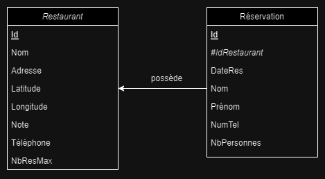
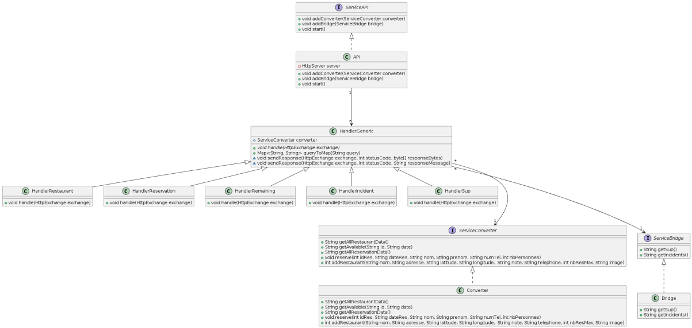
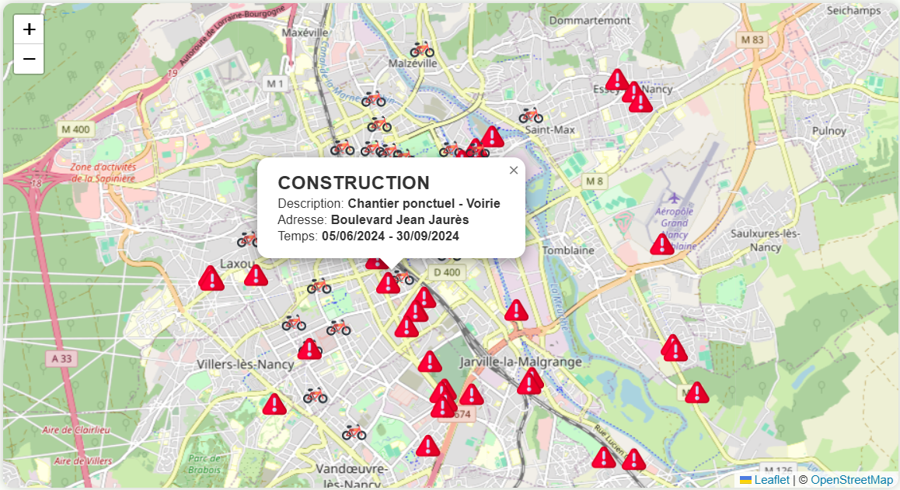

Diagrammes
Diagramme de la structure de la base de donnée :
Description du diagramme
Diagramme de classe de la partie Services :
Description du diagramme
Fonctionnalités réalisées
Afficher les stations de velib avec les informations les concernant
Affichage des informations concernant une station de velib
Choisir les informations à afficher
Carte avec l'affichage des velibs
Carte sans l'affichage des velibs
Afficher les incidents
Affichage des informations concernant les incidents
Afficher les établissements de l'enseignement supérieur
Affichage des informations concernant les établissements de l'enseignement supérieur
Afficher les restaurants

Affichage des restaurants
Réserver une table dans un restaurant
Affichage des reservations pour les restaurants
Afficher la météo
Météo pour les heures à venir
Ajouter un nouveau restaurant sur la carte
Affichage du formulaire d'ajout d'un restaurant sur la carte
Informations nécessaires à l'utilisation de notre projet
Compiler tous les fichier java
javac -cp ".;json-20240303.jar;ojdbc11.jar" *.java
Lancer l'API centrale
java -cp ".;json-20240303.jar;ojdbc11.jar" LancerAPI 1025
Lancer le service de communication avec la base de données
java -cp ".;json-20240303.jar;ojdbc11.jar" LancerConverter localhost 1025
Lancer le service de récupération des incidents et des établissements de l'enseignement supérieur
java -cp ".;json-20240303.jar;ojdbc11.jar" LancerBridge localhost 1025